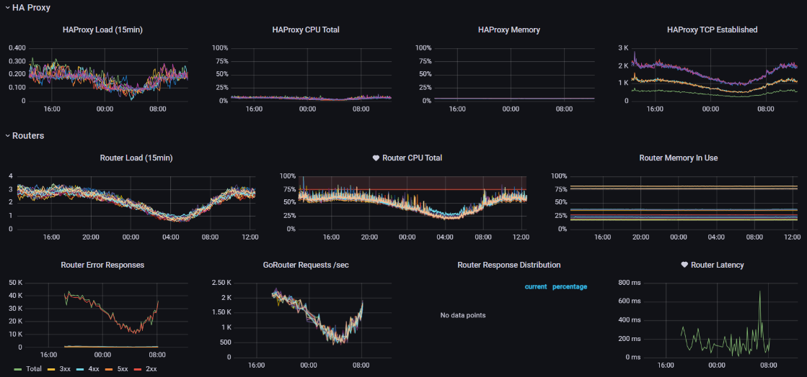
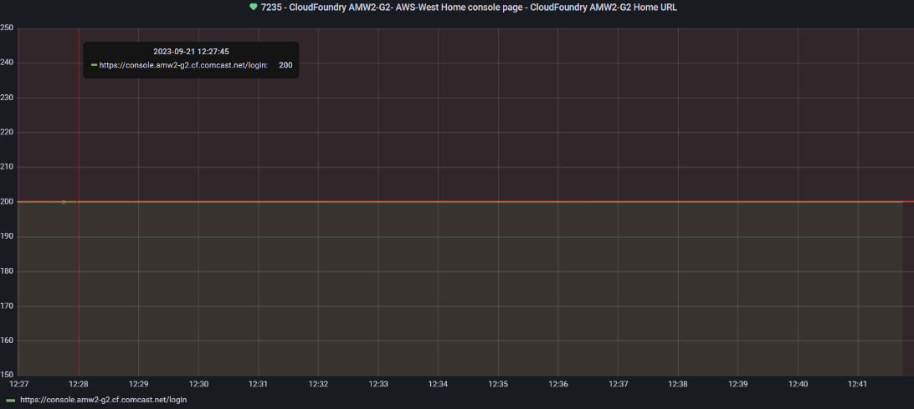
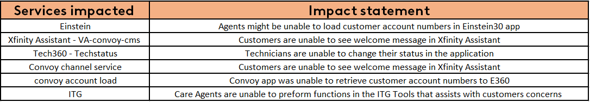
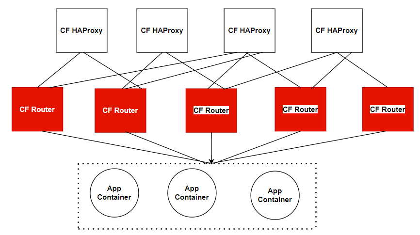

Start time - 8:20 AM EST.
AMW2-G2 site console page is down and observing increased in request/sec for the site go routers.

Received following alerts due to major outage:
impacted app1: AIQ-channel-service
impacted app2:VA convoy cms service
impacted app3: ce-convoy-account-load-service
impacted app4: Einstein account load
impacted app5: ITG
impacted app6: Tech30-techstatus
List of Possible application impacted!
Request the impacted app team to failover/ disable AMW2-G2 site.
Or Using EATS Bot now you can disable the impacted apps
Short description - Multiple applications are facing issue in AMW2-G2 site
Post the message in PMR-WARroom slack for wider communcation.

No DataCenter device was down in last 24 hrs
Hillsboro - Green
Potomac - Green
Westchester - Green
Chicago - Green
Ashburn - Green
Here you find the Cloud Foundry Infrastructure dependency mapping and Site architecture
